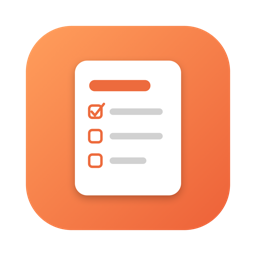

DNoteiPhone·Mac·Windows·Android에서 함께 쓰는 마크다운 노트
노트는 일반 Markdown(.md) 파일로 저장됩니다. 다른 앱에서도 그대로 열 수 있습니다.
iCloud Drive, Dropbox, Google Drive, 이 기기 중에서 고릅니다.
폴더처럼 노트북을 나누고, #태그와 할 일 목록, 사진을 넣을 수 있습니다.
iPhone 단축어로 앱을 열지 않고 노트를 추가할 수 있습니다.
마지막 업데이트: 2026-11-13 · 변경 내역
Android는 처음 설치할 때 ‘출처를 알 수 없는 앱 설치’를 허용해야 합니다. Windows에서 ‘PC 보호’ 창이 뜨면 ‘추가 정보 › 실행’을 누르세요.
DNote에는 개발자가 운영하는 서버가 없습니다. 노트는 사용자의 기기와, 사용자가 직접 고른 클라우드(iCloud Drive·Dropbox·Google Drive)에만 저장됩니다. 광고와 사용 통계 수집도 하지 않습니다.
Google Drive 연결은 사용자가 고른 폴더의 노트 파일을 읽고 쓰는 데에만 씁니다. 자세한 내용은 개인정보처리방침을 보세요.
문의는 GitHub 문의 게시판에 남겨 주세요.
DNote is a Markdown note-taking app for iPhone, Mac and Windows. Notes are plain .md files stored only on the user's device and in the cloud storage the user chooses (iCloud Drive, Dropbox or Google Drive). DNote has no servers of its own, shows no ads and collects no analytics.
Google Drive access is used only to sync the note files in the folder the user selects. See the Privacy Policy.